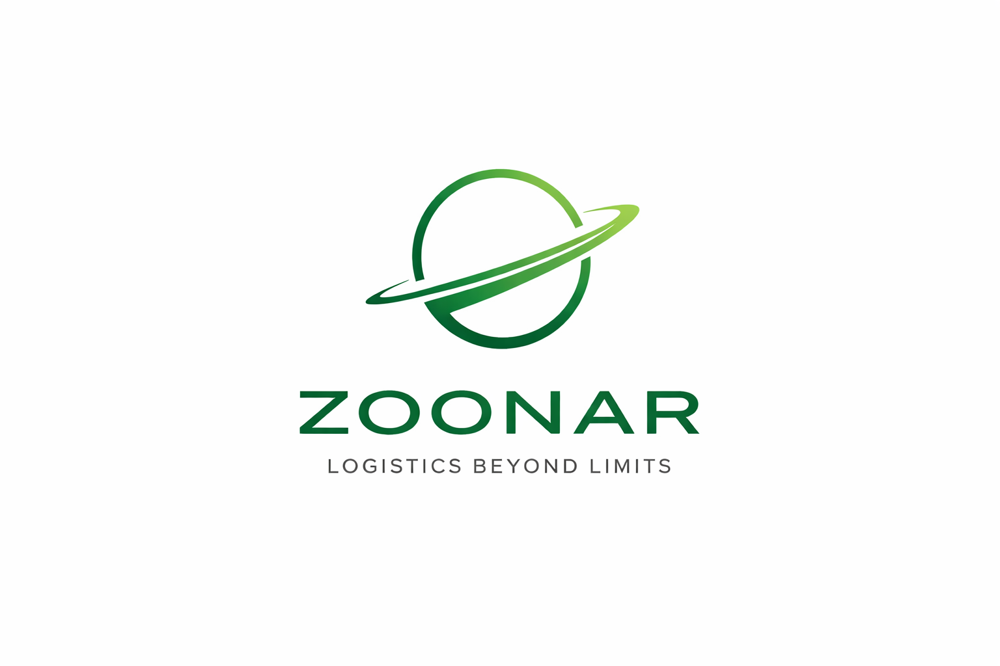
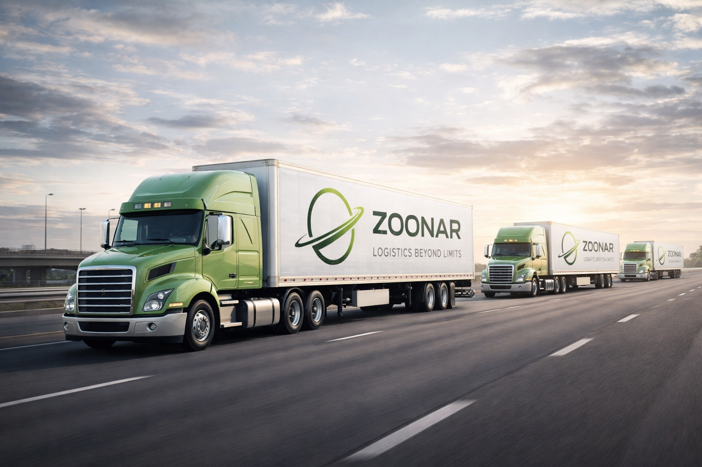
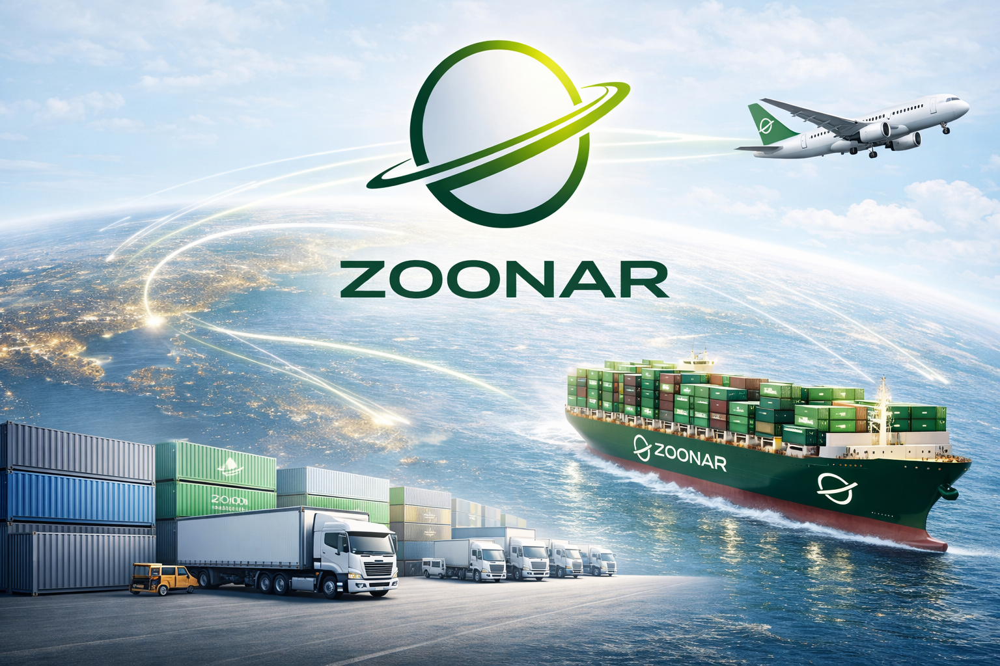

Contact UsZoonar Logistics delivers full-service logistics solutions for businesses that demand control, efficiency and scalability. We act as a strategic partner, managing complex supply chains, optimizing performance and executing global transport with precision.
Our Logistics Control Tower acts as the central nerve system of your entire supply chain. We provide real-time visibility, proactive monitoring and full operational control across all logistics activities.
We manage shipment tracking, exception handling, performance reporting and continuous optimization. By integrating all data streams, we enable faster decision-making and eliminate inefficiencies before they impact your operations.
With a data-driven approach, we ensure complete transparency and control, allowing you to scale confidently while maintaining operational excellence.

We organize and manage international transport across sea, air and road, ensuring your goods move efficiently across global markets.
Our expertise includes carrier selection, route optimization, cost control and full coordination from origin to final delivery.
In addition, we provide flexible warehousing solutions including storage, cross-docking and distribution. This ensures your inventory is strategically positioned and ready to meet demand at any time.

We design, manage and optimize end-to-end supply chains tailored to your business. From supplier coordination to final delivery, we ensure seamless integration across all stages.
Our approach focuses on improving efficiency, reducing costs and increasing reliability through continuous analysis and optimization.
By aligning logistics with your strategic goals, we help you build a scalable and future-proof supply chain.
Beyond our core services, Zoonar Logistics provides a comprehensive range of supporting solutions designed to strengthen and simplify your operations.
Our additional services include warehousing, inventory management, order picking and packing, cross-docking and last-mile distribution. We ensure your goods are handled efficiently and delivered accurately.
We also manage all required documentation, including transport documents, customs clearance and compliance processes, ensuring smooth international shipments without delays.
Furthermore, we support demand planning, shipment tracking, reporting and performance monitoring, giving you full control and visibility over your logistics operations.
Zoonar Logistics is a forward-thinking logistics partner focused on control, efficiency and growth. We specialize in managing complex supply chains and transforming them into structured and scalable operations.
With a strong global network and hands-on approach, we act as an extension of your business. Our mission is to provide full control over your logistics while enabling long-term growth without limitations.